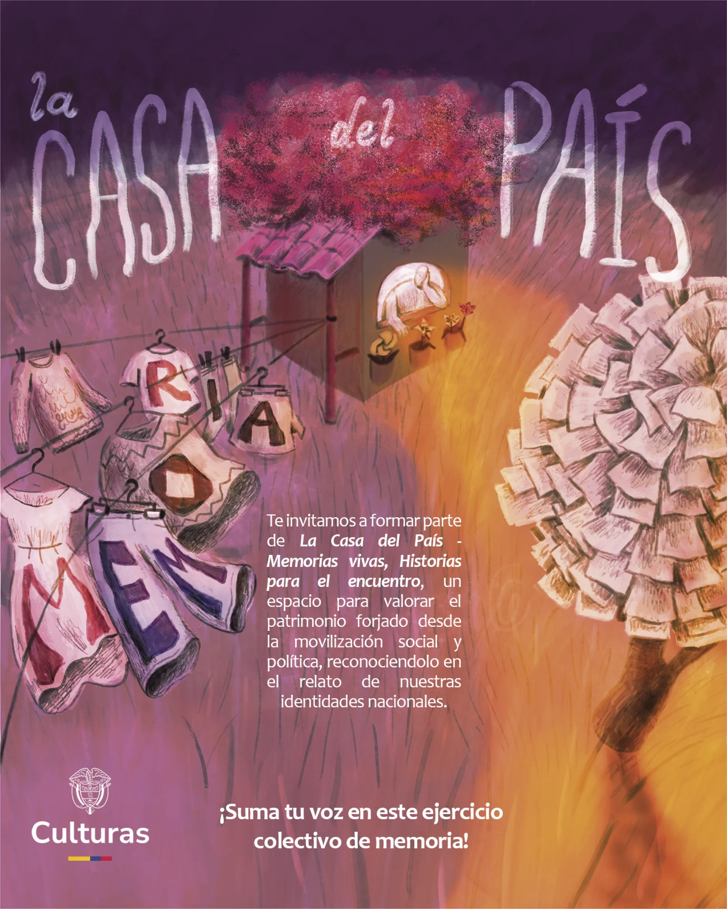
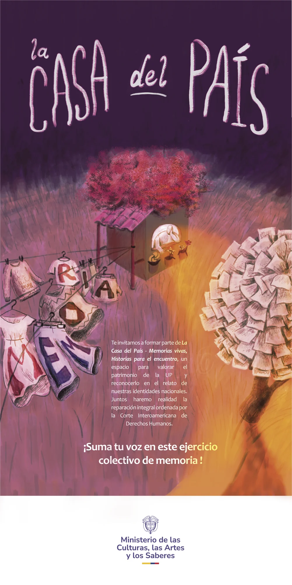

La Casa del País
Memorias vivas, historias para el encuentro
Ilustración para promover La Casa del País. Memorias vivas, historias para el encuentro, un espacio sobre la construcción de memoria con el apoyo del Ministerio de las Culturas, las Artes y los Saberes.
An illustration to promote La Casa del País. Memorias vivas, historias para el encuentro, a gathering on building memory supported by Colombia's Ministry of Cultures, Arts and Knowledge.



Las piezas de difusión.The promotional pieces.